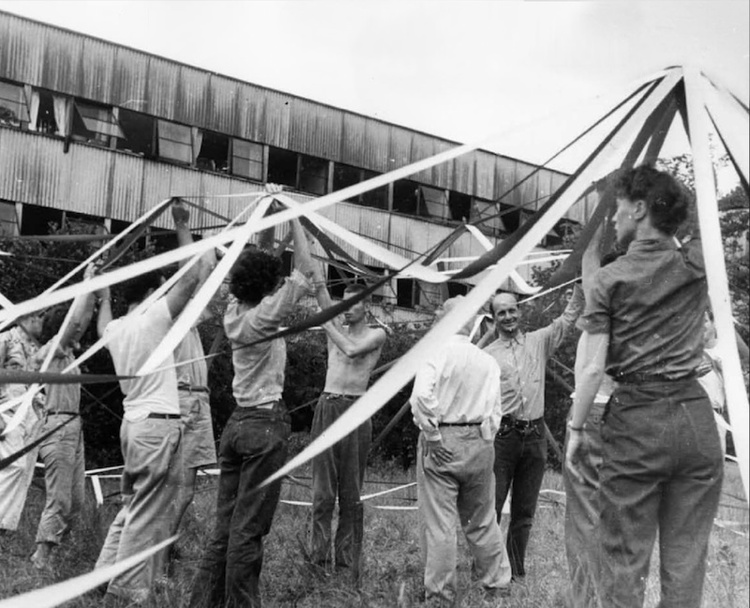

Editorial first
Large responsive type and overlapping layouts let content breathe like a printed yearbook spread.
Design System
Visual language for a digital archive of student life at Black Mountain College (1933–1957). Editorial typography, archival photography, and restrained color define an interface that stays out of the way of the material.
Large responsive type and overlapping layouts let content breathe like a printed yearbook spread.
Grayscale photography and neutral surfaces keep focus on historical material, not UI chrome.
Sage green (#479B80) marks interactive elements and metadata labels — used sparingly.
Semantic HTML, clear hierarchy, and high-contrast text on light backgrounds throughout.
01 — Brand
The BMC Yearbook mark is an abstract geometric form rendered as inline SVG with
currentColor, allowing it to adapt to any surface. Pair with the wordmark
“BMC Yearbook” in bold weight.
02 — Colors
The palette is intentionally minimal. One brand accent on a neutral foundation supports both light and dark modes. Tokens map to Tailwind utilities in the production app.
Primary
#479B80 · rgb(71, 155, 128)
--color-primary · bg-primary
Black
#000000
--color-black · hover state
White
#ffffff
--color-white · page bg
Gray 100
#f3f4f6
Nav, footer surfaces
Gray 400
#9ca3af
Icons, placeholders
Gray 500
#6b7280
Captions, secondary text
Gray 700
#374151
Body text, button hover
Zinc 100
#f4f4f5
Search input background
| Token | Value | Usage |
|---|---|---|
--color-primary | #479B80 | CTAs, links, metadata labels, 404 accent |
--color-primary-hover | #000000 | Primary button hover |
--color-gray-100 | #f3f4f6 | Navigation bar, footer |
--color-zinc-100 | #f4f4f5 | Form field backgrounds |
--color-gray-700 | #374151 | Article body, secondary buttons |
03 — Typography
The production app uses Tailwind’s default sans-serif stack with light body weight and semibold headings. Laviossa Medium is registered as a display font but the live site relies on system sans for performance and consistency.
| Token | Family | Weights |
|---|---|---|
--font-sans |
System UI / Tailwind sans-serif | 300 light · 600 semibold · 700 bold |
font-laviossa |
Laviossa Medium (registered, optional) | 500 medium |
--tracking-wide |
0.025em | Body copy, bio details |
--tracking-wider |
0.05em | Navigation, buttons |
Interwoven Histories
Biographies
Students at Black Mountain College
A digital archive documenting the lives and work of BMC students from 1933 to 1957.
Black Mountain College was an experimental liberal arts college in North Carolina that attracted artists, writers, and thinkers who would shape 20th-century American culture.
Focus
1948 Buckminster Fuller Architecture Class. Courtesy of Western Regional Archives.
04 — Spacing
Spacing follows Tailwind’s 4px base scale. Editorial layouts also use arbitrary negative margins for overlapping image-and-text compositions on the homepage.
| Layout token | Value | Usage |
|---|---|---|
container | max 72rem · px-6 | Main content wrapper |
rounded-full | 9999px | Primary CTA buttons |
rounded-md | 0.375rem | Search inputs, secondary buttons |
gap-[300px] | 300px | Homepage section rhythm (lg+) |
-mr-[460px] | −460px | Hero text/image overlap |
05 — Components
Components are styled with Tailwind utility classes. Below are the core patterns used across search, biography pages, and editorial layouts.
Buttons & links
Search field
Biography metadata grid
Focus
Art / Design / Craft
Role
Student
Attendance
1944 – 1948
Birth
1925
Asheville, NC
Biography grid tile
404 error state
404
Something's Wrong
Like a BMC art piece, this page is avant-garde… as in, it avant-gone anywhere.

1948 Buckminster Fuller Architecture Class. Courtesy of Western Regional Archives.